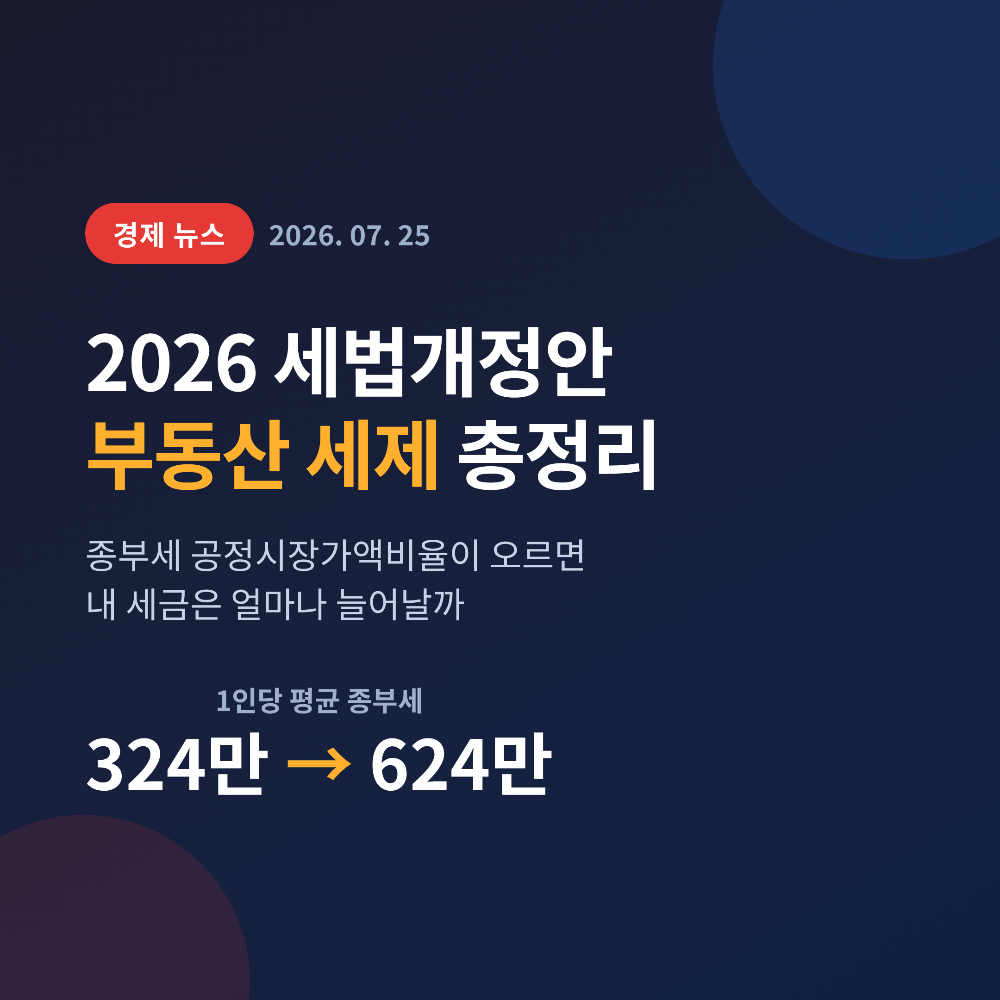
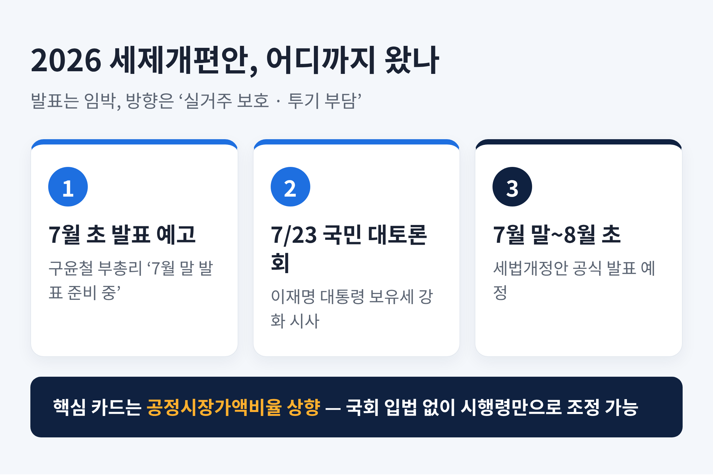
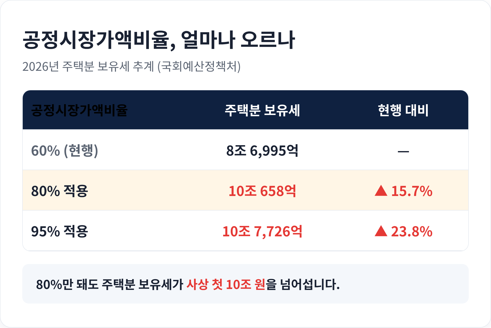
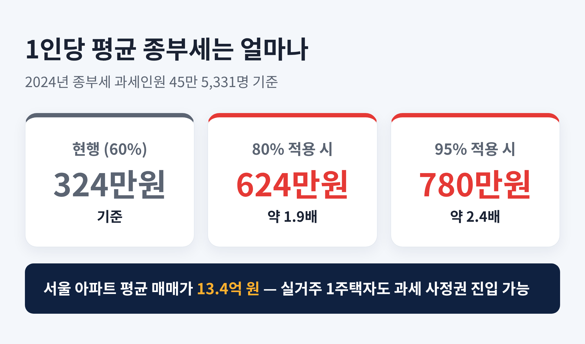
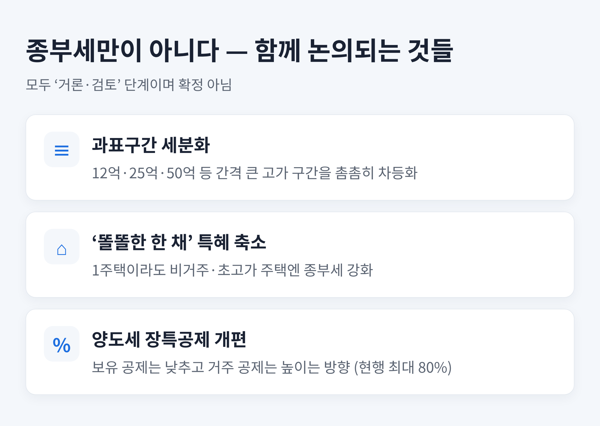
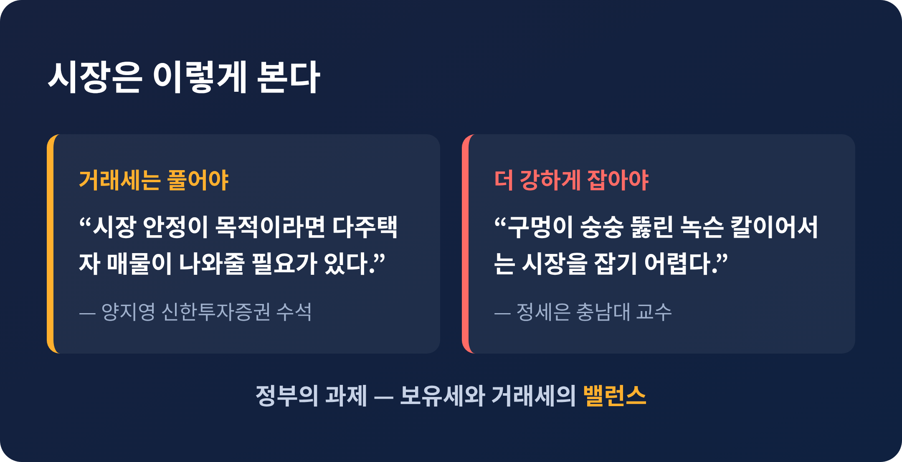

2026 세법개정안 부동산 세제 총정리 — 종부세 공정시장가액비율 오르면 내 세금 얼마나 늘까
정부의 2026년 세법개정안(세제개편안) 발표가 코앞으로 다가왔습니다.
이번 글에서는 그 핵심인 부동산 보유세, 그중에서도 종합부동산세와 공정시장가액비율 이야기를 정리해 보겠습니다.
숫자가 조금 나오지만, 내 세금이 얼마나 달라질지 가늠하는 데 필요한 만큼만 담았습니다.

3줄 요약
① 정부는 7월 말~8월 초 세제개편안을 발표하며, 이번엔 부동산 보유세 강화가 중심입니다.
② 국회 동의 없이 시행령만으로 올릴 수 있는 '공정시장가액비율(현행 60%)' 상향이 가장 유력한 카드입니다.
③ 이 비율을 80%로 올리면 1인당 평균 종부세가 324만 원에서 624만 원으로, 약 1.9배 뛴다는 추계가 나왔습니다.
지금 무슨 일이 벌어지고 있나
기획재정부는 해마다 7월 말에서 8월 초 사이 세법개정안을 내놓습니다.
2026년도 예외가 아닙니다.
구윤철 부총리 겸 재정경제부 장관은 지난 7월 7일 라디오 인터뷰에서 "7월 말 정도 발표를 준비 중"이라고 밝혔습니다.
이재명 대통령도 7월 23일 부동산정책 국민 대토론회에 직접 나와 보유세를 강화해야 한다는 뜻을 거듭 내비쳤습니다.
방향은 뚜렷합니다.
집을 '사 모으는 대상'이 아니라 '사는 곳'으로 되돌리겠다는 것.
그래서 실거주 한 채는 배려하고, 투기성 보유에는 부담을 더 지우겠다는 구상입니다.
다만 아직은 발표 전입니다.
아래에서 다루는 내용은 확정된 법이 아니라, 유력하게 거론되는 방안이라는 점을 먼저 짚어 둡니다.

공정시장가액비율, 왜 이 단어가 핵심일까
낯선 용어부터 풀겠습니다.
공정시장가액비율은 공시가격에 곱해 종부세·재산세의 과세표준을 정하는 비율입니다.
쉽게 말해, 집값 전부가 아니라 그 일부에만 세금을 매기도록 깎아 주는 장치인 셈입니다.
이 비율은 2022년부터 60%로 유지돼 왔습니다.
예전엔 달랐습니다.
이명박 정부 때 80%, 문재인 정부 때 95%까지 올라간 적이 있고, 윤석열 정부 들어 60%로 내렸습니다.
정부가 이 카드를 주목하는 이유는 단순합니다.
세율이나 공제 기준을 바꾸려면 국회를 통과해야 하지만, 공정시장가액비율은 시행령 개정, 즉 국무회의 의결만으로 조정할 수 있습니다.
박합수 건국대 부동산대학원 겸임교수는 "국무회의 의결만 하면 되는 사안인 만큼 8월 말까지만 처리해도 당장 증세가 가능하다"고 설명합니다.
입법 문턱을 넘지 않고도 확실하게 세금을 늘릴 수 있는 방법.
그래서 정치적 부담이 가장 적은 증세 수단으로 꼽힙니다.

그래서 세금은 얼마나 늘어나나
가장 궁금한 대목일 것입니다.
국회예산정책처가 이종욱 의원 요청으로 2024년 종부세 자료를 바탕으로 추계한 숫자를 보겠습니다.
올해 주택분 보유세(재산세와 종부세를 합한 금액)는 현행 60%에서 8조6995억 원으로 추산됐습니다.
이 비율을 80%로 올리면 10조658억 원으로 늘어납니다.
15.7%, 금액으로 1조3663억 원이 더 걷히는 셈이고, 사상 처음 10조 원을 넘어섭니다.
95%까지 올리면 10조7726억 원, 현행보다 23.8% 증가합니다.
1인당 부담으로 좁혀 보면 체감이 더 큽니다.
2024년 종부세 과세 인원 45만5331명을 기준으로, 1인당 평균 종부세는 지금 324만 원입니다.
공정시장가액비율이 80%가 되면 624만 원으로 약 1.9배, 95%면 780만 원으로 약 2.4배가 됩니다.
지역 편차도 선명합니다.
서울의 주택분 보유세는 4조5191억 원에서 80% 적용 시 5조4721억 원으로 21.1% 뜁니다.
경기는 같은 조건에서 10.8% 오릅니다.
집값이 비싼 곳일수록 부담이 몰린다는 뜻입니다.
여기서 중요한 점 하나.
2026년 5월 서울 아파트 평균 매매가격은 13억4543만 원이었습니다.
비율만 조정해도 서울 아파트 상당수가 새로 종부세 사정권에 들어옵니다.
다주택자만의 이야기가 아니라, 실거주 한 채를 가진 사람도 무관하지 않다는 의미입니다.

종부세만이 아니다 — 함께 논의되는 것들
이번 개편은 공정시장가액비율 한 가지로 끝나지 않습니다.
여러 방안이 같이 검토되고 있습니다.
첫째, 과표구간 세분화입니다.
지금은 3억·6억·12억·25억·50억·94억 원 등으로 구간이 나뉘는데, 간격이 큰 고가 구간을 더 촘촘히 쪼개 정교하게 매기자는 논의가 있습니다.
둘째, '똘똘한 한 채' 특혜 축소입니다.
1주택이라도 실제로 살지 않는 비거주 주택이나 초고가 주택에는 종부세를 강화하는 방향입니다.
현재 종부세율은 2주택 이하가 0.5~2.7%, 3주택 이상이 0.5~5.0%인데, 고가주택 세율 인상 가능성도 거론됩니다.
셋째, 양도세 장기보유특별공제 손질입니다.
지금은 보유와 거주 기간에 따라 양도차익의 최대 80%까지 공제해 줍니다.
여기서 거주 부분은 높이고 보유 부분은 낮추거나 없애는 방안이 검토됩니다.
"오래 투자했다고 왜 깎아주나"라는 대통령의 발언이 이 흐름을 요약합니다.
예전엔 오래 보유한 것 자체를 공로로 봤습니다.
지금은 실제로 그 집에 살았는지를 더 따지겠다는 쪽으로 무게추가 옮겨가고 있습니다.

시장은 어떻게 보고 있나
전문가들의 시선은 한 방향이 아닙니다.
거래세를 풀어야 한다는 쪽이 있습니다.
양지영 신한투자증권 수석은 "시장 안정이 목적이라면 다주택자 매물이 나와줄 필요가 있다"며 1주택자 갈아타기와 고령자의 집 규모 줄이기, 지방 이전에 인센티브가 필요하다고 봅니다.
과거 세제를 강하게 조였을 때 오히려 매물이 잠긴 경험을 근거로 듭니다.
반대로 더 강하게 잡아야 한다는 목소리도 있습니다.
정세은 충남대 교수는 "구멍이 숭숭 뚫린 녹슨 칼이어서는 시장을 잡기 어렵다"며 보유세를 강화하면서 양도세를 낮춰주는 식은 곤란하다고 못 박습니다.
정부의 고민도 여기에 있습니다.
보유세는 올리되 거래세는 풀어 매물을 유도할지, 아니면 둘 다 조여 투기를 원천 차단할지.
구윤철 부총리가 "보유세와 거래세의 밸런스를 이뤄야 한다"고 말한 배경입니다.

전망과 납세자 체크포인트
종부세 과세 기준일은 매년 6월 1일입니다.
9월 합산배제 신청을 거쳐 고지서 작업이 본격화되므로, 공정시장가액비율은 8월 말까지 시행령을 고치면 올해 고지분부터 반영될 수 있습니다.
즉, 발표 내용에 따라 올해 11~12월 고지서가 달라질 수 있다는 뜻입니다.
물론 급격한 인상에는 제동도 있습니다.
이종욱 의원은 "보유세 인상은 집 한 채 가진 국민과 은퇴자의 부담을 키우고, 임대인의 세 부담이 전월세로 전가될 수 있다"며 속도 조절을 주문했습니다.
세입자에게 부담이 흘러갈 가능성까지 함께 봐야 한다는 지적입니다.
발표가 나오면 나의 공시가격, 보유 형태, 거주 여부부터 차분히 확인해 보시길 권합니다.
숫자에 놀라기보다, 내 상황에 어떤 항목이 적용되는지를 먼저 따지는 편이 낫습니다.
※ 이 글은 공개된 자료를 정리한 정보 제공용이며, 특정 투자나 매매를 권유하지 않습니다. 세제는 확정 전까지 바뀔 수 있고, 개별 세액은 조건에 따라 다르므로 실제 판단은 세무 전문가와 상담하시기 바랍니다.
정리하면 이렇습니다.
이번 세법개정안의 핵심은 "실거주는 지키고, 투기성 보유엔 부담을 지운다"는 한 문장으로 압축됩니다.
공정시장가액비율이라는 숫자 하나가 수많은 집주인의 고지서를 바꿔 놓을 참입니다.
발표는 아직 나오지 않았습니다.
그러나 방향은 이미 정해졌습니다 — 남은 것은 폭과 속도뿐입니다.